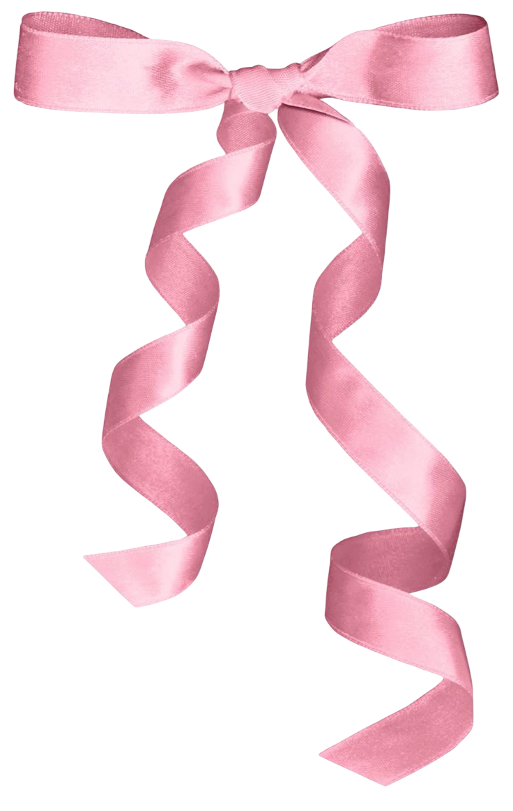
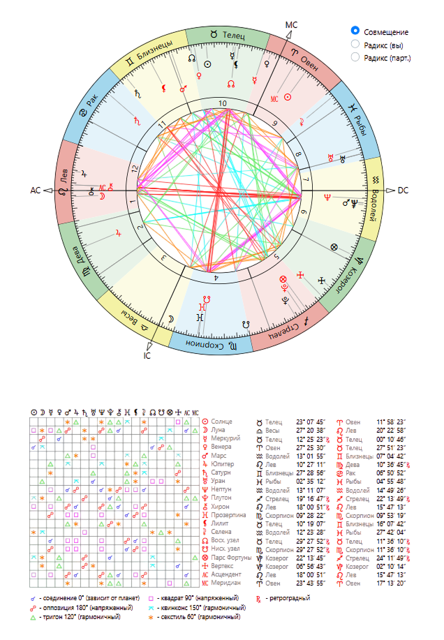
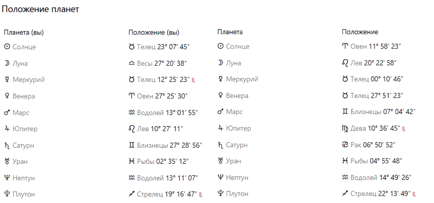

Natal chart
Тригон Меркурий — Юпитер
Этот аспект говорит о сильном взаимопонимании и хорошей интеллектуальной совместимости. Между вами легко формируется дружба, основанная на общих взглядах, интересных разговорах и схожем отношении к важным жизненным вопросам.
Друг помогает тебе смотреть на многие вещи шире, мыслить масштабнее и видеть новые перспективы, а ты, в свою очередь, помогаешь ему сохранять практичность и не уходить слишком далеко в размышления и идеи.
Такой аспект особенно хорош для дружбы, путешествий, совместной учебы, обсуждения планов и любых дел, где важны развитие, поддержка и обмен опытом. Вместе вы можете вдохновлять друг друга и двигаться вперед.
Секстиль Меркурий — Сатурн
Этот аспект отлично подходит для надежной дружбы и продуктивного сотрудничества. Между вами легко выстраивается уважительное общение, основанное на доверии, ответственности и умении слышать друг друга.
Друг помогает тебе становиться более собранной, дисциплинированной и уверенной в своих решениях, а ты вдохновляешь его новыми идеями, свежим взглядом и нестандартными подходами.
Такая дружба особенно сильна в учебе, работе, совместных проектах и любых сферах, где важны стабильность, поддержка и умение идти к результату вместе.
Квадрат Меркурий — Нептун
Этот аспект может создавать небольшую путаницу в общении: один из вас мыслит более рационально и конкретно, а другой больше доверяет интуиции, ощущениям и внутреннему восприятию ситуации.
Иногда из-за этого может казаться, что кто-то слишком практичен, а кто-то — слишком мечтателен. Возможны недопонимания, разные ожидания или ощущение, что вас слышат не совсем так, как хотелось бы.
Но при честном и спокойном общении этот аспект помогает лучше понимать друг друга, развивать терпение и уважение к разным взглядам на жизнь.
Тригон Венера — Плутон
Этот аспект делает дружбу глубокой, искренней и очень значимой. Между вами может быть сильное доверие, уважение и ощущение внутренней надежности.
Вы помогаете друг другу становиться увереннее, спокойнее и сильнее эмоционально. Друг может поддерживать тебя в важных жизненных переменах, а ты — помогать ему находить гармонию и внутренний баланс.
Такая дружба часто ощущается как важная и судьбоносная: в ней много честности, поддержки и настоящей вовлеченности в жизнь друг друга.
Тригон Марс — Марс
Этот аспект дает отличную совместимость в действиях и совместных делах. Вы хорошо понимаете темп друг друга, умеете поддерживать в целях и легко находите общий ритм в активности.
Вместе вам комфортно заниматься спортом, работой, учебой, путешествиями и любыми задачами, где важны энергия, движение и результат. Вы вдохновляете друг друга на развитие и помогаете не останавливаться на полпути.
Такая дружба часто строится на уважении, активности и ощущении, что рядом человек, на которого действительно можно опереться.
Соединение Марс — Нептун
Этот аспект делает дружбу эмоционально насыщенной и интуитивной. Вы можете хорошо чувствовать настроение друг друга, поддерживать в сложные периоды и понимать многое даже без лишних слов.
Иногда один из вас действует более прямо и решительно, а другой — мягче и интуитивнее. Из-за этого могут возникать недопонимания, если ожидания не обсуждаются открыто.
Но в хорошем проявлении этот аспект помогает объединять практичность и внутреннее чутье: один помогает действовать увереннее, а другой — видеть ситуацию глубже и спокойнее.
Оппозиция Юпитер — Нептун
Этот аспект показывает, что в дружбе могут возникать разные взгляды на мечты, ожидания и жизненные идеалы. Один из вас может быть более практичным и стремиться к конкретным результатам, а другой — больше доверять вдохновению, интуиции и внутренним ощущениям.
Иногда из-за этого появляются завышенные ожидания, недопонимания или разница в восприятии одних и тех же ситуаций. Важно сохранять честность и не строить лишних иллюзий друг о друге.
При хорошем взаимопонимании этот аспект помогает соединять мечты с реальностью: один вдохновляет, а другой помогает воплощать идеи в жизнь.
Оппозиция Сатурн — Плутон
Этот аспект может делать дружбу непростой в вопросах контроля, ответственности и личных границ. Иногда между вами возникает ощущение, что каждый по-своему старается отстоять свою позицию и не хочет уступать.
Это может проявляться в спорах о принципах, взглядах на серьезные решения или в желании доказать свою правоту. Но такой аспект также помогает учиться уважать силу характера друг друга и строить отношения на честности и зрелости.
Если избегать давления и больше доверять друг другу, эта связь может стать очень устойчивой и научить вас обоих важным жизненным урокам.
Соединение Уран — Уран
Этот аспект особенно часто встречается у людей примерно одного возраста и говорит о схожем взгляде на жизнь, интересах и жизненных этапах. Вы легко понимаете друг друга, потому что проходите через похожие события и внутренние изменения.
В вашей дружбе много свободы, легкости и ощущения, что рядом человек “на одной волне”. У вас могут быть похожие цели, взгляды на будущее, общее окружение и совместные увлечения.
Такой аспект помогает формировать крепкую дружбу, основанную на взаимопонимании, поддержке и ощущении настоящего товарищества.
Соединение Нептун — Нептун
Этот аспект дает вам тонкое интуитивное понимание друг друга и схожее восприятие многих жизненных тем. Вы можете одинаково чувствовать атмосферу, настроение людей и важные внутренние процессы, даже если не всегда говорите об этом вслух.
Ваша дружба часто строится спокойно и естественно, без лишнего напряжения. Между вами может быть ощущение мягкой внутренней связи, когда многое понятно без слов.
Этот аспект помогает создавать стабильные, доверительные отношения, в которых важны поддержка, принятие и эмоциональная чуткость.
Соединение Плутон — Плутон
Этот аспект говорит о глубоком взаимопонимании на уровне жизненного опыта, взглядов и внутренних стремлений. У вас могут быть похожие ценности, схожее отношение к важным переменам и понимание серьезных жизненных процессов.
Такая дружба часто ощущается как значимая и сильная: вы способны поддерживать друг друга не только в повседневных вопросах, но и в важных этапах личного роста.
Между вами может быть чувство надежности, внутренней силы и понимания без необходимости многое объяснять. Это аспект дружбы, которая проходит через время и помогает становиться сильнее.
Общий вывод по совместимости
Ваша совместимость больше всего похожа на крепкую, осознанную и надежную дружбу, в которой много уважения, поддержки и настоящего взаимопонимания. Между вами есть интеллектуальная близость, умение обсуждать важные темы и помогать друг другу расти.
Вы можете быть отличной командой в учебе, работе, совместных проектах и просто в жизни, потому что хорошо дополняете друг друга: один помогает смотреть шире, другой — сохранять устойчивость и практичность.
Несмотря на отдельные моменты, где возможны разногласия или разный взгляд на ситуации, именно они делают вашу дружбу более зрелой и прочной. Это связь, которая строится не на случайности, а на глубоком уважении, доверии и ощущении, что рядом действительно свой человек.